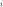
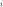

MixtureClassifier¶
(Source code, png, hires.png, pdf)
{kind=link}
{kind=link}
- class MixtureClassifier(*args)¶
Particular classifier based on a mixture distribution.
- Available constructors:
MixtureClassifier(mixtDist)
- Parameters
- mixtDist
Mixture A mixture distribution.
- mixtDist
See also
Notes
This implements a mixture classifier which is a particular classifier based on a mixture distribution:
The classifier proposes
 classes. The rule to assign a point
classes. The rule to assign a point
 to a class  is defined as follows:
to a class  is defined as follows:See useful methods
classify()andgrade().Methods
classify(*args)Classify points according to the classifier.
Accessor to the object's name.
Accessor to the dimension.
getId()Accessor to the object's id.
Accessor to the mixture distribution.
getName()Accessor to the object's name.
Accessor to the number of classes.
Accessor to the object's shadowed id.
Accessor to the verbosity.
Accessor to the object's visibility state.
grade(inP, outC)Grade points according to the classifier.
hasName()Test if the object is named.
Test if the object has a distinguishable name.
Accessor to the parallel flag.
setMixture(mixture)Accessor to the mixture distribution.
setName(name)Accessor to the object's name.
setParallel(flag)Accessor to the parallel flag.
setShadowedId(id)Accessor to the object's shadowed id.
setVerbose(verbose)Accessor to the verbosity.
setVisibility(visible)Accessor to the object's visibility state.
- __init__(*args)¶
- classify(*args)¶
Classify points according to the classifier.
Available usages:
classify(inputPoint)
classify(inputSample)
- Parameters
- inputPointsequence of float
A point to classify.
- inputSample2-d a sequence of float
A set of point to classify.
Notes
The classifier proposes
classes where is the dimension of
the mixture distribution mixtDist. The rule to assign a point
to a class is defined as follows:In the first usage, it returns an integer which corresponds to the class where inputPoint has been assigned.
In the second usage, it returns an
Indicesthat collects the class of each point of inputSample.
- getClassName()¶
Accessor to the object’s name.
- Returns
- class_namestr
The object class name (object.__class__.__name__).
- getDimension()¶
Accessor to the dimension.
- Returns
- dimint
The dimension of the classifier.
- getId()¶
Accessor to the object’s id.
- Returns
- idint
Internal unique identifier.
- getMixture()¶
Accessor to the mixture distribution.
- Returns
- mixtDist
Mixture The mixture distribution.
- mixtDist
- getName()¶
Accessor to the object’s name.
- Returns
- namestr
The name of the object.
- getNumberOfClasses()¶
Accessor to the number of classes.
- Returns
- n_classesint
The number of classes
- getShadowedId()¶
Accessor to the object’s shadowed id.
- Returns
- idint
Internal unique identifier.
- getVerbose()¶
Accessor to the verbosity.
- Returns
- verbbool
Logical value telling if the verbose mode has been activated.
- getVisibility()¶
Accessor to the object’s visibility state.
- Returns
- visiblebool
Visibility flag.
- grade(inP, outC)¶
Grade points according to the classifier.
Available usages:
grade(inputPoint, k)
grade(inputSample, classList)
- Parameters
- inputPointsequence of float
A point to grade.
- inputSample2-d a sequence of float
A set of point to grade.
- kinteger
The class number.
- classListsequence of integer
The list of class number.
Notes
The grade of
with respect to the class k is
.In the first usage, it returns a real that grades inputPoint with respect to the class k. The greatest, the best.
In the second usage, it returns an
Indicesthat collects the grades of the point of inputSample with respect to the
class of classList.
point of inputSample with respect to the
class of classList.
- hasName()¶
Test if the object is named.
- Returns
- hasNamebool
True if the name is not empty.
- hasVisibleName()¶
Test if the object has a distinguishable name.
- Returns
- hasVisibleNamebool
True if the name is not empty and not the default one.
- isParallel()¶
Accessor to the parallel flag.
- Returns
- flagbool
Logical value telling if the parallel mode has been activated.
- setMixture(mixture)¶
Accessor to the mixture distribution.
- Parameters
- mixtDist
Mixture The mixture distribution.
- mixtDist
- setName(name)¶
Accessor to the object’s name.
- Parameters
- namestr
The name of the object.
- setParallel(flag)¶
Accessor to the parallel flag.
- Parameters
- flagbool
Logical value telling if the classification and grading are done in parallel.
- setShadowedId(id)¶
Accessor to the object’s shadowed id.
- Parameters
- idint
Internal unique identifier.
- setVerbose(verbose)¶
Accessor to the verbosity.
- Parameters
- verbbool
Logical value telling if the verbose mode has been activated.
- setVisibility(visible)¶
Accessor to the object’s visibility state.
- Parameters
- visiblebool
Visibility flag.